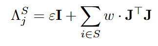
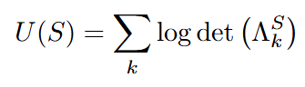
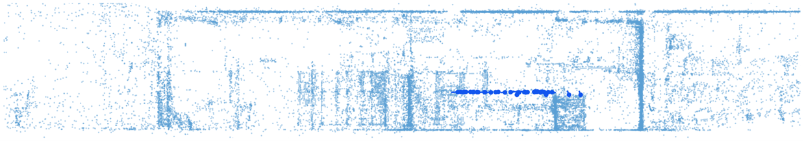
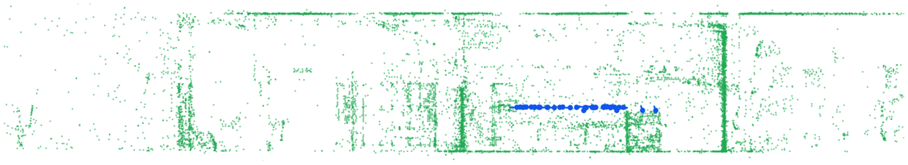
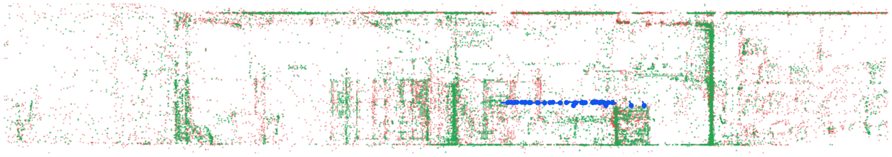

Visual SLAM systems like ORB-SLAM accumulate map points indefinitely. Every point that passes the initial quality filter is kept forever, regardless of how redundant it becomes for future localization. In the long run, this bloats memory and slows down the system. With the goal to keep the map small but informative, MapPoint Selection addresses this by asking a different question: given a fixed budget, which subset of map points is most valuable for the camera to localize itself?
The value of a map point is measured through Fisher Information — a quantity that captures how sensitively a pixel observation responds to changes in camera pose. When a known 3D point is projected into a keyframe, the resulting pixel location constrains the camera's 6 degrees of freedom (3 translation, 3 rotation). The Fisher Information Matrix (FIM) for a keyframe is:

where J is the 2×6 Jacobian of the reprojection with respect to camera pose, w = 1/σ² is a noise weight scaled by the ORB pyramid octave, and εI is a small regularizing prior. The total utility across all keyframes is:

Log-determinant captures all six degrees of freedom simultaneously — it is the log-volume of the pose uncertainty ellipsoid. Maximizing it is equivalent to minimizing the total localization uncertainty across all keyframes.
The utility function U(S) is submodular: adding a point to a larger set yields a smaller marginal gain than adding it to a smaller set. This diminishing-returns property means a greedy algorithm — always picking the point with the highest marginal gain — achieves a guaranteed (1 − 1/e) ≈ 63% approximation of the optimal selection.
A naive greedy implementation would recompute every point's gain from scratch at each step, which is prohibitively slow. The lazy greedy algorithm avoids this by maintaining a max-heap of stale upper bounds. A candidate is only re-evaluated when it reaches the top of the heap. Because gains can only decrease as points are added, the stale value is always a valid upper bound — and in practice most candidates never need re-evaluation. This reduces recomputations from O(n × budget) to roughly O(n log n).
The algorithm was validated on the ETH3D dataset, a widely used SLAM and stereo-vision benchmark dataset for evaluating 3D reconstruction. Below are original and reduced maps of one of the dataset named delivery_area, a high-resolution DSLR reconstruction with ground-truth camera poses provided in COLMAP format. A conversion script parses the COLMAP files (quaternion poses, 3D point positions, 2D observations) and writes them into the format the selection algorithm reads.


The original full map has 31,978 points, while the reduced map has 12,791 kepy points with 40% budget. As you can tell with raw eyes, though the number of points is significantly reduced, the overall geometric structure of the environment is still preserved. Below is another visualization to better show the contrast with red points being the ones discarded and green points being the ones kept:

With the validation on the ETH3D dataset, we proved that the reduced map is indeed small and informative
Works Cited